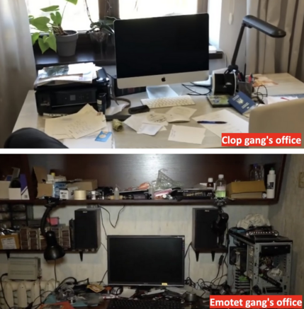
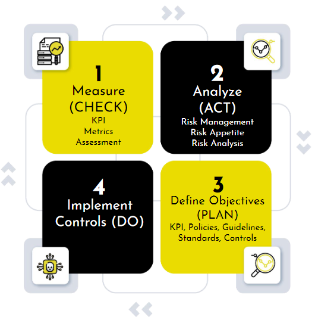

Approaching OT/ICS Cybersecurity¶

A few days ago, together with Rocco Sicilia and FESTO Academy, I presented a webinar on the approach to OT/ICS cybersecurity. We often spend time raising cybersecurity awareness, and this webinar focused on giving cybersecurity fundamentals to OT managers.
Understanding the Attacker's Point of View¶
The main discussion was about the threat actors, in other words the attackers. Understanding the attackers gives us the big picture of their different business models (the "why", using a definition by Simon Sinek). We focused on:
- The evolving cybercrime phenomenon.
- The value the attacker is looking for.
- The types of attackers, their goals and their budgets.
Then we discussed some popular cyberattacks. WannaCry and NotPetya (2017) are, in my opinion, IT attacks. The OT/ICS-specific attacks include Stuxnet (Iran, 2010), BlackEnergy (Ukraine, 2015), Triton (Saudi Arabia, 2017), the water supply of a Florida city (2021), Colonial Pipeline (2021) and the recent Viasat attack (2022).

IT and OT attacks have different targets, but we reviewed how attackers usually breach enterprises: three out of four threat vectors are based on human behavior, and only one is based on technology.
Why Do We Interconnect Critical Devices to the Internet?¶
Given the previous section, the question is legitimate and the answer is obvious: the Industry 4.0 era is based on fast and automatic interactions (data exchanges). Data can be transmitted automatically between components, plants, systems, suppliers and customers. The faster and more automatic the process, the more profitable the business.
Cyberspace provides tools, methods, and interactions to get more opportunities.
But at the same time:
It is considered the fifth theater of warfare.
Staying out of cyberspace, or interconnecting everything without considering the consequences, are both extreme solutions. We need to find the right balance between them.
Find the correct proportion between freedom, even unconscious, and security
Peculiarities of OT/ICS Devices¶
The next chapter was about the peculiarities of OT/ICS. The audience was already aware of them, but we presented them from an IT perspective:
- They are designed for "availability": the same term is used in the IT world with a different meaning.
- They are extremely sensitive to Ethernet disruptions and overloads. Remember that Ethernet networks can fail by design (STP convergence).
- Their communications do not guarantee confidentiality, integrity and availability, which are fundamental attributes in IT security.
- They have a long life: compared to the IT world, we can find 20-year-old plants.
- They are not subject to the same life cycle as IT components: production OT/ICS components (including HMIs) are usually "untouchable".
Based on our experience, we presented seven common issues:
- Shadow OT: nobody knows exactly what is installed in the plant networks and why (e.g., WiFi networks, cloud-based telemetry, vulnerable devices, default passwords, remote access devices). This leads to unmanaged risk.
- Weak and sensitive protocols: OT/ICS protocols do not follow the CIA triad used in IT, but they run on Ethernet networks. This leads to unexpected behaviors.
- Long-lived devices: plants installed 5 years ago and never maintained are vulnerable to well-known attacks. OT/ICS plants tend to be legacy, weak and harmful.
- Remote maintenance: third-party operators can connect to critical plants at any time and act locally, and they can watch sensitive production processes and information (espionage and sabotage).
- Removable storage: third-party operators are used to upgrading software with untrusted USB keys. It is not uncommon for malware to spread via USB even today.
The list is not meant to be complete: these are the main issues that industries report to us.
How Should We Approach Cybersecurity in OT/ICS Environments?¶
There is no need to reinvent the wheel: many standards and frameworks are available. The webinar discussed the Framework for Improving Critical Infrastructure Cybersecurity (NIST), the CIS Controls, UNI ISO 31000:2018 Risk management - Guidelines, Protecting Controlled Unclassified Information in Nonfederal Systems and Organizations (800-171 and 800-172) and the Secure Architecture for Industrial Control Systems (Purdue Model).
The IEC 62443 standard deserves a special mention: both integrators and customers should take it into account. We do not yet have regulations for the medical and industrial sectors, so IEC 62443 can serve as a guideline.
The purpose of this phase is to plan a strategy that takes the standards above into account.
What Should We Do in Practice?¶
Cybersecurity is a process, implemented with organizational and technical measures. In practice, we want to build a continuous improvement process that starts from the first major issue: Shadow OT.
We cannot protect what we don't know.
The first step is to assess the OT/ICS infrastructure and find out what is installed, its purpose, its business impact and its weaknesses or robustness. Then we can move on to the suppliers, partners, third parties and employees, and evaluate the cybersecurity risk.
We can assume a 4-phase improvement process:
- Check: measure the cybersecurity posture (get qualitative or quantitative values for the many cybersecurity aspects).
- Act: analyze the associated risk and highlight the unacceptable risks.
- Plan: define a strategy to mitigate the unacceptable risks, taking into account standards and regulations.
- Do: govern and supervise the implementation.

It is a PDCA cycle, but I start from the third phase because I assume that the first two were already completed during the first iteration. The next CHECK phase is expected to produce better KPIs (Key Performance Indicators).
IT-OT Convergence¶
An interesting discussion was about IT and OT convergence: should we go for it?
I consider IT and OT two different worlds with different values and rules. In my opinion, they cannot converge and they should not. IT follows the CIA (Confidentiality, Integrity, Availability) triad, while OT follows a sort of Safety, Reliability and Productivity triad. Moreover, uniqueness is something to avoid in IT (we do not want to reinvent the wheel), while customization is expected in OT/ICS.
IT and OT cybersecurity, however, must converge. Cybersecurity must be a common overlay for all the departments of an organization. The convergence point of IT and OT cybersecurity is defined by:
- Safety first.
- A risk-based approach.
- An open mindset and dialogue with stakeholders.
Conclusions¶
Preparing a webinar or a training path is a good way to review concepts and organize them in a coherent flow. I hope that auditors can get a different point of view on OT/ICS security. Slides are available, and we will deliver an additional session in the future.